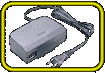
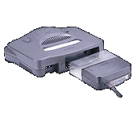

|  |
|  |
ケーブル類やＡＣアダプタのケースなどは、安全性を重視した設計になっているのはもちろん、使いやすいということにもこだわっています。
たとえば、コントローラのケーブル。長ければ長いほどいろんな場所でプレイできて便利だと思いますが、あまり長すぎると信号の届き具合が悪くなったりするんです。また、コストの問題もあります。その相反する要素を考慮した末、ベストの長さがあの長さなワケです。 また、ＡＣアダプタのケースですが、従来のものと比べていかがですか？ コンセントまわりがスッキリして気持ちいいでしょう？あれは、容量の問題で従来のカタチが取れなかったために生まれたアイデアなんです。ケーブルのまんなかあたりにケースを付けることもできるのですが、なんとも中途半端なので、思いきってボディ寄りにしました。 このほかにも、壊れにくさなども考慮して、安心して使える製品になっております。 |
| 不要輻射ノイズとの戦いのページへ |
 |